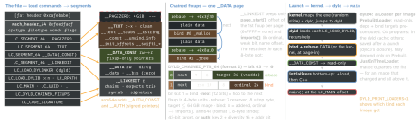

Header
MH_MAGIC_64 0xfeedfacf (32-bit 0xfeedface). cputype CPU_TYPE_ARM64 = ARM 12 | ABI64 0x01000000 = 0x0100000c; x86_64 0x01000007; arm64e is cpusubtype 2, not a cputype.filetype: OBJECT 1 · EXECUTE 2 · DYLIB 6 · DYLINKER 7 · BUNDLE 8 · DSYM 0xa · FILESET 0xc. flags: TWOLEVEL 0x80 (binds name their library) · PIE 0x200000 (load at a random address; default since 10.7) · APP_EXTENSION_SAFE · DYLIB_IN_CACHE.
Load commands
Each = cmd + cmdsize + payload. R = | 0x80000000 (LC_REQ_DYLD): dyld refuses an image with an R command it does not know; other unknown ones are ignored.
SEGMENT_64 0x19 | name, vmaddr/vmsize, fileoff/filesize, max/init prot, flags, sections |
SYMTAB 0x2 · DYSYMTAB 0xb | symbols + strings; indirect table for stubs and GOT |
LOAD_DYLINKER 0xe | /usr/lib/dyld — the kernel loads it |
LOAD_DYLIB 0xc | install name + current/compat version; _WEAK_ 0x18|R may be missing; REEXPORT 0x1f|R |
ID_DYLIB 0xd · RPATH 0x1c|R | a dylib’s own install name · a run-path entry |
MAIN 0x28|R | offset of main (replaced UNIXTHREAD); dyld reads it, the kernel does not |
UUID 0x1b | 128-bit build id — the symbolication key |
BUILD_VERSION 0x32 | platform, minOS, SDK, tools |
DYLD_INFO_ONLY 0x22|R | old format: rebase / bind / weak / lazy opcodes + export trie |
DYLD_CHAINED_FIXUPS 0x34|R | chain starts + imports (exports: EXPORTS_TRIE 0x33|R) |
CODE_SIGNATURE 0x1d | offset/size of the blob at the end of __LINKEDIT |
ENCRYPTION_INFO_64 0x2c | cryptoff · cryptsize · cryptid (below) |
Newest in loader.h: ATOM_INFO 0x36 · FUNCTION_VARIANTS 0x37 (+_FIXUPS 0x38) · TARGET_TRIPLE 0x39 · LAZY_LOAD_DYLIB_INFO 0x3A. macOS 15 / iOS 18 read dylib_use_command: one LOAD_DYLIB with flags weak · re-export · upward · delayed-init.
Segments and sections
- Segment = page-aligned VM range with one protection (page = 4 or 16 KB by arch); section = named sub-range (
__TEXT,__text) with a type: S_ZEROFILL (__bss: vmsize > filesize), S_SYMBOL_STUBS, S_NON_LAZY_SYMBOL_POINTERS (__got), S_MOD_INIT_FUNC_POINTERS, S_INIT_FUNC_OFFSETS (32-bit offsets, in __TEXT).
__PAGEZERO: ld’s default is 4 GB on 64-bit; xnu refuses an arm64 executable whose hard page zero does not cover the whole low 32-bit address space.- Clean pages (
__TEXT, __LINKEDIT) are evictable and re-read from the file; dirty ones (__DATA, fixed-up __DATA_CONST) cost RAM. SG_READ_ONLY 0x10 = “made read-only after fixups”.
- Runtimes find metadata by section: Swift scans
__TEXT,__swift5_proto (conformances), _swift5_types, _swift5_protos per image; ObjC lists (__objc_classlist, __objc_selrefs, …) sit in __DATA* or __AUTH*.
Fat files and encrypted text
fat_header is big-endian: 0xcafebabe (_64: 0xcafebabf), then one fat_arch per slice: cputype, cpusubtype, offset, size, align (2n). Slices are keyed by CPU only — device and simulator arm64 collide; the platform (iOS 2, iOS simulator 7) lives in LC_BUILD_VERSION, hence XCFrameworks. LC_ENCRYPTION_INFO_64: xnu maps a cryptid 1 range through a decrypting pager (com.apple.unfree); no decrypter → exec fails. cryptid 0 = plain.
Example — take a binary apart
lipo -archs App
otool -l App
otool -L App
vtool -show-build App
dyld_info -fixups App
dyld_info -imports -exports Lib.dylib
dyld_info -inits App
DYLD_PRINT_LIBRARIES=1 DYLD_PRINT_INITIALIZERS=1 ./tool
sudo dyld_usage App
Fixups — the only writes dyld makes
- Rebase: a pointer into its own image, stored as if loaded at 0; dyld adds the slide. Bind: the target is a name (
_malloc) looked up in one library’s exports trie — two-level: the import’s lib ordinal picks the library (0 self · -1 main executable · -2 flat lookup · -3 weak).
- Opcode format (
LC_DYLD_INFO_ONLY): lists of locations, plus lazy binding (__stub_helper + __la_symbol_ptr, bound on first call).
- Chained fixups: runtime from iOS 13.4; the default output since macOS 12 / iOS 15. Smaller
__LINKEDIT; no lazy binding — every bind at load, so RTLD_LAZY = RTLD_NOW, and -undefined dynamic_lookup that relied on lazy binds breaks.
- Page-in linking (WWDC22, iOS 16 generation): dyld skips the fixups and the kernel applies a DATA page’s chain as it faults in. Needs chained fixups; launch only (a
dlopened image is fixed by dyld); __DATA_CONST stays clean. Shared-cache dylibs have had it “for over a decade”. Apple’s demo: 15 ms launch, 1 ms of it fixups.
dyld4 — when the prebuilt path is used
At most two PrebuiltLoaderSets per process: the dyld cache’s (every OS dylib) and the program’s. A program’s set is cloned from its JustInTimeLoaders after loading, before initializers, saved under a name from its cdhash + a hash of its path, and never used after a
reboot (no persistence for an attacker). None is built with DYLD_INSERT_LIBRARIES, DYLD_*_PATH, DYLD_IMAGE_SUFFIX or interposing. DYLD_USE_CLOSURES: 0 JIT · 1 JIT + save · 2 prebuilt or fail.
Timeline — linker and loader
| WWDC17 | dyld3: cache the parse / load / lookup work (a launch closure) |
| iOS 13 | dyld3 for third-party iOS apps (macOS apps stay on dyld2); 13.4: chained-fixup runtime |
| macOS 11.0.1 | system dylibs only in the built-in cache — no files on disk |
| macOS 12 · iOS 15 | dyld4 (in macOS 12 crash logs), no dyld2 fallback; chained fixups the default; from “the 2021 releases” the cache is split into several files |
| Xcode 14 · iOS 16 | faster, parallel ld64 · page-in linking (WWDC22) |
| Xcode 15 | new linker by default (classic via -ld64); mergeable libraries — metadata ≈ doubles a dylib, Debug re-exports instead of merging |
| Xcode 16 | -ld_classic deprecated |
| macOS 15 / iOS 18 | dylib_use_command (delayed-init dylibs) |
| Xcode 27 | ld64 removed; -ld_classic no longer supported |
Initializers — the exact order
dyld walks the graph bottom-up: every dependency before its client, upward links afterwards. Per image: ObjC +load first (“done before C++ initializers”), then C++ static constructors, __attribute__((constructor)), -init. A delay-init dylib (-delay_library) is in the graph, but its initializers are skipped while it stays in the delay-init state.
Finding a dylib · the shared cache
- dyld does not search: an install name is a path.
@executable_path = the main executable’s directory; @loader_path = that of the image holding the load command; @rpath = tried with each entry of the run-path list, built from the LC_RPATHs along the dependency chain.
DYLD_LIBRARY_PATH, _FRAMEWORK_PATH, _INSERT_LIBRARIES are ignored for SIP-protected, set[ug]id or entitled binaries; hardened runtime needs com.apple.security.cs.allow-dyld-environment-variables (+ disable-library-validation for another team’s code).- Cache mappings: TEXT r-x · DATA_CONST · DATA · LINKEDIT r, plus AUTH / AUTH_CONST on arm64e (DATA / DATA_CONST with signed pointers), spaced so the read-only parts share kernel page tables (32 MB granule on arm64, 1 GB on x86_64).
Traps
-weak_framework without declaring the functions weak: clang may delete your if (fn) NULL check.- Probing for
/usr/lib/libz.dylib as a file on macOS 11+ — it is not there; dlopen() it.
-ld_classic still in OTHER_LDFLAGS — no longer supported from Xcode 27.